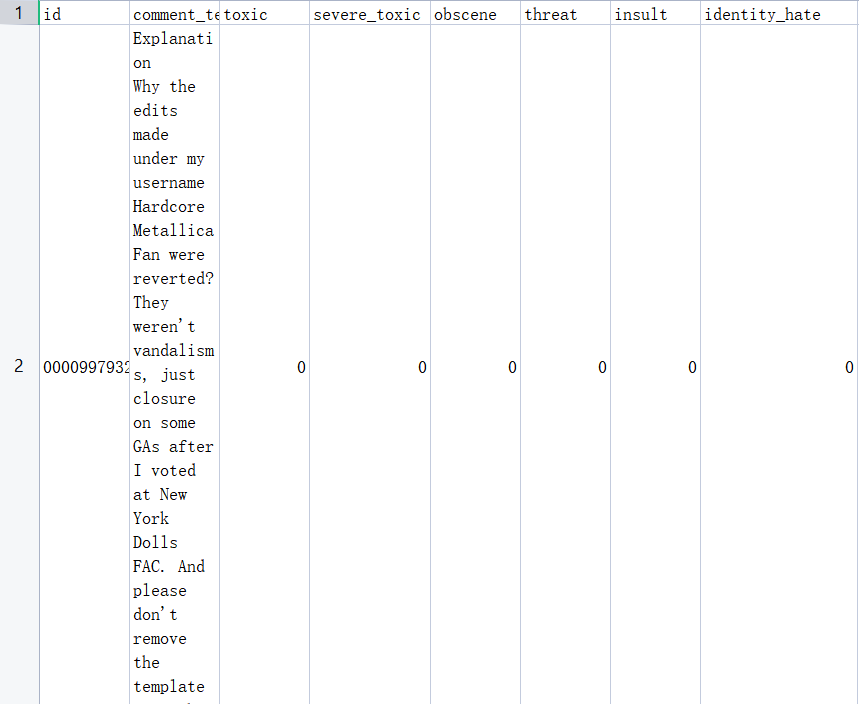
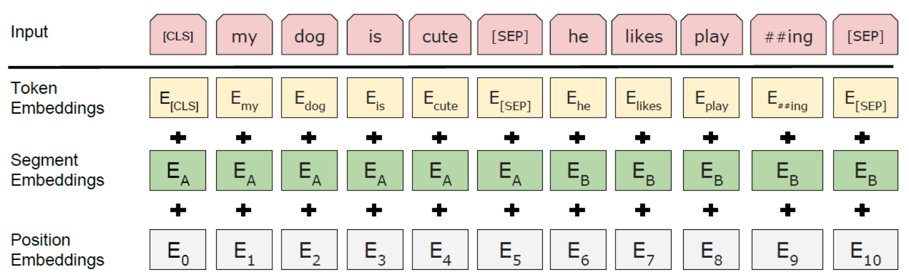

做实验时用到了多标签分类模型，学习一下大佬是怎么写工程量这么大的代码的
代码结构
1 | ├── pybert |
可以看到文件非常多，但是结构非常清晰，而且大概能通过名字看出文件的功能。
Dependencies和How to use在给出的链接中，这里就不一一列举了，直接来看代码吧。
Config文件
路径参数放在一个文件下，可以大大提高修改时的效率，用的是pathlib库
1 | from pathlib import Path |
读入数据
1 | python run_bert.py --do_data |
通过命令行参数 --do_data来处理数据，又是一个知识点，在工程量大的时候，argparse是一个很有用的工具
argparse 模块是 Python 内置的一个用于命令项选项与参数解析的模块，argparse 模块可以让人轻松编写用户友好的命令行接口。通过在程序中定义好我们需要的参数，然后 argparse 将会从 sys.argv 解析出这些参数。argparse 模块还会自动生成帮助和使用手册，并在用户给程序传入无效参数时报出错误信息。
在run_bert.py文件中，调用了两个函数read_data和train_val_split
1 | if args.do_data: |
io/task_data.py
返回 sentences 和 targets 列表，分别存放句子和标签
1 | def read_data(self,raw_data_path,preprocessor = None,is_train=True): |
train.csv格式

io/train_val_split
1 | def train_val_split(self,X, y,valid_size,stratify=False,shuffle=True,save = True, |
参数解析：（结合run_bert.py）
X: sentencesy: targetsvalid_size: 验证集的占比startify: 是否分层，层数 =len(list(set(y)))shuffle: 是否混洗train数据集save: 是否保存数据集(.pickle文件，存放（x, y）元组）
pbar以及logger还有tqdm都用来美化输出[1]
Train
处理数据
-
首先是加载数据
-
然后将数据包装成InputExample对象，我看了一下，就加了一个unique ID，text_b用于需要处理句子对的任务，比如提问和回答对
1
2
3
4
5
6
7
8
9
10
11
12
13
14
15
16class InputExample(object):
def __init__(self, guid, text_a, text_b=None, label=None):
"""Constructs a InputExample.
Args:
guid: Unique id for the example.
text_a: string. The untokenized text of the first sequence. For single
sequence tasks, only this sequence must be specified.
text_b: (Optional) string. The untokenized text of the second sequence.
Only must be specified for sequence pair tasks.
label: (Optional) string. The label of the example. This should be
specified for train and dev examples, but not for test examples.
"""
self.guid = guid
self.text_a = text_a
self.text_b = text_b
self.label = label -
分词
- 使用
Transformer库中的tokenize分词 - 保证输入长度一致
- Token Embedding：单词的 Embedding，例如 [CLS] dog 等，通过训练学习得到。
- [CLS] 标志放在第一个句子的首位
- [SEP] 标志用于分开两个输入句子，例如输入句子 A 和 B，要在句子 A，B 后面增加 [SEP] 标志。
- [MASK] 标志用于遮盖句子中的一些单词，将单词用 [MASK] 遮盖之后，再利用 BERT 输出的 [MASK] 向量预测单词是什么。
1
2
3tokens = ['[CLS]'] + tokens_a + ['[SEP]']
input_ids = self.tokenizer.convert_tokens_to_ids(tokens)
input_mask = [1] * len(input_ids)- Segment Embedding：用于区分每一个单词属于句子 A 还是句子 B，如果只输入一个句子就只使用 EA，通过训练学习得到。
1
2
3
4segment_ids = [0] * len(tokens)
if tokens_b:
tokens += tokens_b + ['[SEP]']
segment_ids += [1] * (len(tokens_b) + 1)- Position Embedding：编码单词出现的位置，与 Transformer 使用固定的公式计算不同，BERT 的 Position Embedding 也是通过学习得到的

1
2
3
4
5
6
7
8
9
10class InputFeature(object):
'''
A single set of features of data.
'''
def __init__(self,input_ids,input_mask,segment_ids,label_id,input_len):
self.input_ids = input_ids
self.input_mask = input_mask
self.segment_ids = segment_ids
self.label_id = label_id
self.input_len = input_len - 使用
放三张演示图 ↩︎